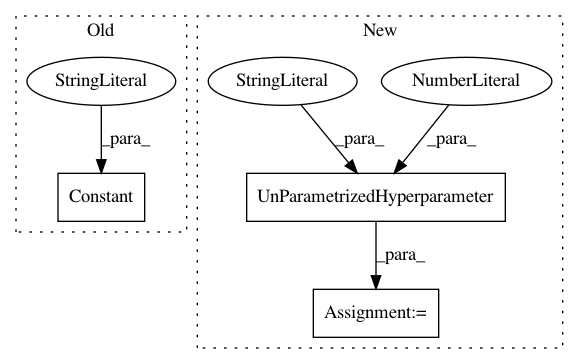

fb01effccf0c2271b1c4a81da55d8d1c6e009d2f,autosklearn/pipeline/components/classification/xgradient_boosting.py,GradientBoostingClassifier,get_hyperparameter_search_space,#Any#,140
Before Change
@staticmethod
def get_hyperparameter_search_space(dataset_properties=None):
cs = ConfigurationSpace()
loss = cs.add_hyperparameter(Constant("loss", "deviance"))
learning_rate = cs.add_hyperparameter(UniformFloatHyperparameter(
name="learning_rate", lower=0.0001, upper=1, default=0.1, log=True))
n_estimators = cs.add_hyperparameter(Constant("n_estimators", 100))
After Change
name="reg_lambda", value=1))
base_score = cs.add_hyperparameter(UnParametrizedHyperparameter(
name="base_score", value=0.5))
scale_pos_weight = cs.add_hyperparameter(UnParametrizedHyperparameter(
name="scale_pos_weight", value=1))
return cs
In pattern: SUPERPATTERN
Frequency: 3
Non-data size: 3
Instances
Project Name: automl/auto-sklearn
Commit Name: fb01effccf0c2271b1c4a81da55d8d1c6e009d2f
Time: 2016-04-12
Author: eggenspk@informatik.uni-freiburg.de
File Name: autosklearn/pipeline/components/classification/xgradient_boosting.py
Class Name: GradientBoostingClassifier
Method Name: get_hyperparameter_search_space
Project Name: automl/auto-sklearn
Commit Name: 98736e643f3e31e2eae5b12aa3946d2bf1b31b4f
Time: 2017-10-26
Author: feurerm@informatik.uni-freiburg.de
File Name: autosklearn/pipeline/components/classification/decision_tree.py
Class Name: DecisionTree
Method Name: get_hyperparameter_search_space
Project Name: automl/auto-sklearn
Commit Name: 98736e643f3e31e2eae5b12aa3946d2bf1b31b4f
Time: 2017-10-26
Author: feurerm@informatik.uni-freiburg.de
File Name: autosklearn/pipeline/components/regression/decision_tree.py
Class Name: DecisionTree
Method Name: get_hyperparameter_search_space